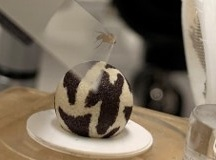
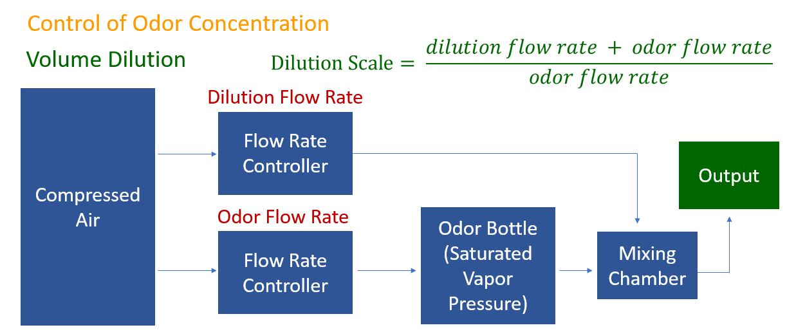
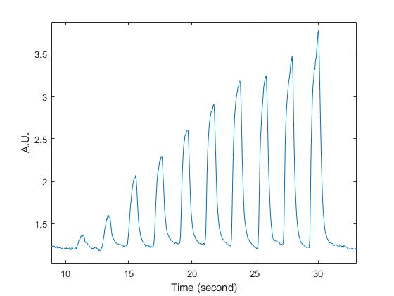

This project is an olfactory VR system, designed to measure odor-guided behaviors in Drosophila melanogaster (fruit fly). The system is composed of three parts: a spherical treadmill, an olfactometer (for controlled odor delivery), and a feedback system (to adjust odor delivery based on the fly's position within the virtual world).
The system is specifically designed to be compatible with two-photon and three-photon imaging, enabling simultaneous recording of neuronal activity in the fruit fly's brain and its behavioral responses.
Related Skills:
Setup Overview
Close-up of Tethered Fly (Fly will be lowered during the experiment)
Spherical Treadmill
Initially invented by Buchner in 1976, the ball treadmill tracking system has since evolved into a relatively mature technique. In this system, an animal is tethered and placed on top of a floating sphere, which is maintained aloft by a gentle air stream from below.
As the animal walks, the sphere rotates, simulating the effect of the animal moving on a two-dimensional plane. The walking trajectory of the animal is inferred from the rotation of the sphere.
Video recording is employed to gauge the sphere's rotation and the movement of the tethered fly. Since 1976, methods have advanced, and this project utilizes FicTrac, an open-source software that derives the animal's walking trajectory from video information captured by a single camera.
Olfactometer
Odors are diluted before being delivered to the animal. Two mass flow controllers (MFC) are used to manage the odor concentration. One controller adjusts the flow rate of the air stream carrying the odor, while the other regulates the flow rate of the dilution air stream. These two streams are combined in a mixing chamber before being delivered to the animal. The schematic diagram is shown below:


Response Time: X-axis represents time since the command was sent (second), Y-axis represents flow rate (target is 50)
PID Readout (Pulse Mode)
Python code has been developed for communicating with the MFCs via serial ports and is integrated with closed-loop control, as described in the following section. The code takes the final total flow rate and target dilution factor as input, determining the optimal combination of dilution MFC flow rate and odor MFC flow rate. These flow rates are then sent as updated setpoints to both MFCs as commands.
Alicat MC Series MFCs are utilized for their accuracy, rapid response time, and compatibility with serial communication. After adjusting the PD parameters, the two controllers achieve a response time of less than 100 milliseconds when the input is compressed air at 30 psi.
The odor air stream and dilution air stream merge at an odor mixing chamber capable of accommodating up to eight odor inputs. A metal grid is placed at the output of the mixing chamber to enhance turbulence for more efficient mixing. The output port's diameter measures 13.7mm. When the final output flow rate is set to 500 Standard Cubic Centimeters(SCCM), the air stream velocity exiting the port is 5.6 cm/s.
A photoionization detector (PID) is employed to assess the olfactometer's performance. While the odor can be effectively delivered in pulses, concentration fluctuations occur when the odor is continuously disseminated. This issue may result from odor depletion within the odor bottle.